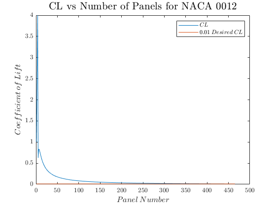
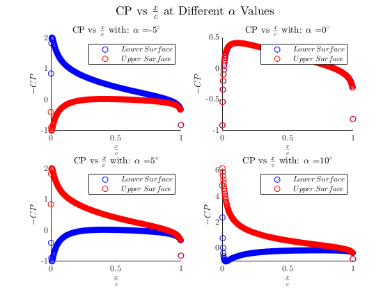
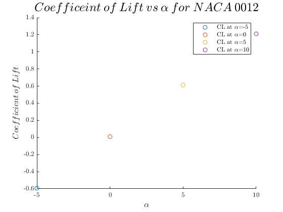
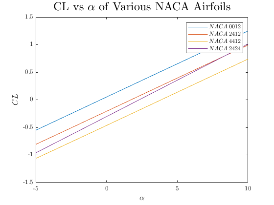

Contents
%%%%%%%%%%%%%%%%%%%%%%%%%%%%%%%%%%%%%%%%%%%%%%%%%%%%%%%%%%%%%%%%%%%%%%%%%%% % ASEN 3111 - CA3 % % Created By: Johnathan Tucker % % Collaborators: Michael Martinson % % The purpose of the script is to act as a driver that will execute the % functions necesary to solve questions two and three of CA3. Note that % question one is the function Vortex_Panel itself. % % Created Date: 3/25/2020 % % Change Log: % - 3/26/2020: Code up the function for the first question % - 3/28/2020: Code up the function for the second question % - 3/31/2020: Finalize formatting %%%%%%%%%%%%%%%%%%%%%%%%%%%%%%%%%%%%%%%%%%%%%%%%%%%%%%%%%%%%%%%%%%%%%%%%%%%
Housekeeping
clc; clear all; close all; tic
Question 1
For my solution to question 1 please see my Vortex_Panel function
Question 2
Question_2()
The number of panels required to obtain 0.01 absolute error... when compared to the exact value is 465.000000  
Question 3
Question_3()
%%%%%%%%%%%%%%%%%%%%%%%%%%%%% NACA 0012 %%%%%%%%%%%%%%%%%%%%%%%%%%%%%%%%%%% Results for the NACA 0012 Airfoil: Vortex Panel Estimated Lift Curve Slope: 6.888181 [1/rad] Thin Airfoil Theory Estimated Lift Curve Slope: 6.283185 [1/rad] Percent Error of Lift Curve Slope Estimates: 8.783093 % Vortex Panel Estimated Zero Lift AOA: 0.417718 [deg] Thin Airfoil Theory Estimated Zero Lift AOA: -0.000000 [deg] Absolute Error of Zero Lift AOA Estimates: 0.417718 %%%%%%%%%%%%%%%%%%%%%%%%%%%%% NACA 2412 %%%%%%%%%%%%%%%%%%%%%%%%%%%%%%%%%%% Results for the NACA 2412 Airfoil: Vortex Panel Estimated Lift Curve Slope: 6.890932 [1/rad] Thin Airfoil Theory Estimated Lift Curve Slope: 6.283185 [1/rad] Percent Error of Lift Curve Slope Estimates: 8.819509 % Vortex Panel Estimated Zero Lift AOA: -1.727840 [deg] Thin Airfoil Theory Estimated Zero Lift AOA: -1.512579 [deg] Absolute Error of Zero Lift AOA Estimates: 0.215261 %%%%%%%%%%%%%%%%%%%%%%%%%%%%% NACA 4412 %%%%%%%%%%%%%%%%%%%%%%%%%%%%%%%%%%% Results for the NACA 4412 Airfoil: Vortex Panel Estimated Lift Curve Slope: 6.894439 [1/rad] Thin Airfoil Theory Estimated Lift Curve Slope: 6.283185 [1/rad] Percent Error of Lift Curve Slope Estimates: 8.865899 % Vortex Panel Estimated Zero Lift AOA: -3.857460 [deg] Thin Airfoil Theory Estimated Zero Lift AOA: -3.025159 [deg] Absolute Error of Zero Lift AOA Estimates: 0.832301 %%%%%%%%%%%%%%%%%%%%%%%%%%%%% NACA 2424 %%%%%%%%%%%%%%%%%%%%%%%%%%%%%%%%%%% Results for the NACA 2424 Airfoil: Vortex Panel Estimated Lift Curve Slope: 7.549962 [1/rad] Thin Airfoil Theory Estimated Lift Curve Slope: 6.283185 [1/rad] Percent Error of Lift Curve Slope Estimates: 16.778582 % Vortex Panel Estimated Zero Lift AOA: -2.306275 [deg] Thin Airfoil Theory Estimated Zero Lift AOA: -1.512579 [deg] Absolute Error of Zero Lift AOA Estimates: 0.215261
Functions Called
The following functions were built and called as a part of this assignment
function [Cl, CP] = Vortex_Panel(x,y,V_inf,alpha,plotcp,increment) %Vortex_Panel Performs the calculations detailed in the Kuethe and Chow %document % % Author: Johnathan Tucker % % Collaborators: N/A % This function takes in the x and y values from the NACA airfoil function, % the free stream velocity, the angle of attack, plotcp flag, and plot % increments. It outputs the coefficient of pressure, coefficient of lift, % and displays a plot of coefficient of pressure vs x/c % % Last Revised: 3/26/2020 %%%%%%%%%%%%%%%%%%%%%%%%%%%%%%%%%%%%%%%%%%%%%%%%%%%%%%%%%%%%%%%%%%%%%%%%%%% % Get the chord length for calculating Cl c = max(x) - min(x); % Begin the translation from 4tran to MATLAB % Create necessary variables M = length(x) - 1; MP1 = M + 1; alpha = alpha *(pi/180); for I = 1:M IP1 = I + 1; X(I) = 0.5*(x(I) + x(IP1)); Y(I) = 0.5*(y(I) + y(IP1)); S(I) = sqrt( (x(IP1) - x(I))^2 + (y(IP1) - y(I))^2 ); theta(I) = atan2( (y(IP1) - y(I)) , (x(IP1) - x(I))); sine(I) = sin(theta(I)); cosine(I) = cos(theta(I)); end RHS = sin(theta - alpha); for I = 1:M for J = 1:M if I == J CN1(I,J) = -1; CN2(I,J) = 1; CT1(I,J) = 0.5*pi; CT2(I,J) = 0.5*pi; else A = -(X(I) - x(J))*cosine(J) - (Y(I) - y(J))*sine(J); B = (X(I) - x(J))^2 + (Y(I) - y(J))^2; C = sin(theta(I) - theta(J)); D = cos(theta(I) - theta(J)); E = (X(I) - x(J))*sine(J) - (Y(I) - y(J))*cosine(J); F = log(1 + S(J)*(S(J) + 2.*A)/B); G = atan2(E*S(J), B + A*S(J)); P = (X(I) - x(J))*sin(theta(I) - 2.*theta(J)) +... (Y(I) - y(J))*cos(theta(I) - 2.*theta(J)); Q = (X(I) - x(J))*cos(theta(I) - 2.*theta(J)) -... (Y(I) - y(J))*sin(theta(I) - 2.*theta(J)); CN2(I,J) = D + .5*Q*F/S(J) - (A*C + D*E)*G/S(J); CN1(I,J) = .5*D*F + C*G - CN2(I,J); CT2(I,J) = C + .5*P*F/S(J) + (A*D - C*E)*G/S(J); CT1(I,J) = .5*C*F - D*G - CT2(I,J); end end end for I = 1:M AN(I,1) = CN1(I,1); AN(I,MP1) = CN2(I,M); AT(I,1) = CT1(I,1); AT(I,MP1) = CT2(I,M); for J = 2:M AN(I,J) = CN1(I,J) + CN2(I,J-1); AT(I,J) = CT1(I,J) + CT2(I,J-1); end end AN(MP1,1) = 1; AN(MP1,MP1) = 1; for J = 2:M AN(MP1,J) = 0; end RHS(MP1) = 0; % Solve the system of equations using A\b instead of Cramers GAMA = AN\RHS'; for I = 1:M V(I) = cos(theta(I) - alpha); for J = 1:MP1 V(I) = V(I) + AT(I,J)*GAMA(J); CP(I) = 1 - V(I)^2; end end % Change from gamma prime to gamma via Kuethe and Chow gamma = GAMA.*(2*pi*V_inf); % Solve for CL by calculating capital GAMMA inline using CA3 Notes formulas Cl = 2*(sum(gamma(1:end-1)'.*S))/(V_inf*c); %% Create the pressure plot % This flag is if only one cp plot is wanted if plotcp == 1 figure cp_lower = CP(1:(length(x)+1)/2); cp_upper = CP((length(x)+1)/2:end); scatter(x((length(x)+1)/2:end-1)./c,cp_upper,'r') hold on scatter(x(1:(length(x)+1)/2)./c,cp_lower,'b') title('$Coefficeint\:of\:Pressure\:vs\:\\frac{x}{c}$','Interpreter','latex') xlabel('$x-distance\:[\% Chord]$','Interpreter','latex') ylabel('$Coefficient\:of\:Presure$','Interpreter','latex') legend('$Upper\:Surface$','$Lower\:Surface$','Interpreter','latex') % This flag is for the cp subplots required for question two elseif plotcp == 2 hold on subplot(2,2,increment) cp_lower = -CP(1:(length(x)+1)/2); cp_upper = -CP((length(x)+1)/2:end); scatter(x(1:(length(x)+1)/2)./c,cp_lower,'b') hold on scatter(x((length(x)+1)/2:end-1)./c,cp_upper,'r') title(strcat('CP vs $\frac{x}{c}$ with: $\alpha$ = ',num2str(alpha*180/pi),'$^\circ$'),'Interpreter','latex'); sgtitle('CP vs $\frac{x}{c}$ at Different $\alpha$ Values','Interpreter','latex'); xlabel('$\frac{x}{c}$','Interpreter','latex') ylabel('$-CP$','Interpreter','latex') legend('$Lower\:Surface$','$Upper\:Surface$','Interpreter','latex') end end function Question_2() %Question_2 Performs all calculations and outputs for question 2 in CA3 % % Author: Johnathan Tucker % % Collaborators: N/A % % This function has no inputs or direct outputs. However, it does display % the number of panels required to achieve a CL of 0.01 to the terminal. In % addition to this terminal display it also displays three plot. The first % is the convergence of CL as the number of panels increases. The second is % the CL of the NACA 0012 at different AOA's. The final is the CP of the % NACA 0012 at different AOA's. % Last Revised: 3/26/2020 %% Begin code block for problem 2 % To determine a measurement of panels need to aquire accuracy I'll use the % CP values from the vortex panel method to calculate CL and compare these % with what should be the exact value for the NACA 0012 at zero degrees % AOA, CL = 0; % Exact CL value const CL_0012_exact = 0; % Now iterate through different panel values noting when 1 percent error is % achieved error_cl = 100; % Get the panel increment close so it doesn't run forever panel_increment = 464; % Iterate on the process until CL is 0.01 or lower while error_cl >= 0.01 % Iterate on calculating the x and y values and then CL and CP [naca_0012_x_iter,naca_0012_y_iter] = NACA_Airfoil(0/100,0/10,12/100,1,panel_increment); [Cl_0012_iter,Cp_0012_iter] = Vortex_Panel(naca_0012_x_iter,naca_0012_y_iter,1,0,0,0); % Increment the panel number panel_increment = panel_increment + 1; % Calculate the error between the exact and calculated CL values error_cl = abs(CL_0012_exact - Cl_0012_iter); end fprintf("The number of panels required to obtain 0.01 absolute error...\nwhen compared to the exact value is %f\n",panel_increment) %% Create a plot for CL versus the number of panels % error_cl = 100; % % Get the panel increment close so it doesn't run forever % panel_increment = 1; % % Iterate on the process until CL is 0.01 or lower % while error_cl >= 0.01 % % Iterate on calculating the x and y values and then CL and CP % [naca_0012_x_iter,naca_0012_y_iter] = NACA_Airfoil(0/100,0/10,12/100,1,panel_increment); % [Cl_0012_iter(panel_increment - 3),Cp_0012_iter] = Vortex_Panel(naca_0012_x_iter,naca_0012_y_iter,1,0,0,0); % % Increment the panel number % panel_increment = panel_increment + 1; % % Calculate the error between the exact and calculated CL values % error_cl = abs(CL_0012_exact - Cl_0012_iter); % end % Load in the full CL vector. This vector was created by running the code % above that is commented out. CL_iter_vec = load("CL_iteration_mat.mat"); % Save the CL vector to a const. CL_iter_vec = CL_iter_vec.Cl_0012_iter; % Create the Figure figure plot(1:465,[1,2,3,4,CL_iter_vec]) hold on plot(1:465,ones(1,465).*0.01) title('CL vs Number of Panels for NACA 0012',... 'Interpreter','latex','FontSize',16) xlabel('$Panel\:Number$','Interpreter','latex','FontSize',12) ylabel('$Coefficient\:of\:Lift$','Interpreter','latex','FontSize',12) legend('$CL$','$0.01\:Desired\:CL$','Interpreter','latex') %% Now using the panel increment to reach the desired error I'll create % plots of CP at the desired angles of attack alpha_vec = [-5,0,5,10]; figure % Iterate through the desired AOA's and get the corresponding CL's for i = 1:length(alpha_vec) [Cl_0012_iter_2(i),Cp_0012_iter] = Vortex_Panel(naca_0012_x_iter,naca_0012_y_iter,1,alpha_vec(i),2,i); end %% Finally create a plot of the CL values at these specified AOA's figure % Iterate through the CL values and plot them for i = 1:length(Cl_0012_iter_2) scatter(alpha_vec(i),Cl_0012_iter_2(i)) hold on end title('$Coefficeint\:of\:Lift\:vs\:\alpha\:for\:NACA\:0012$',... 'Interpreter','latex','FontSize',18) xlabel('$\alpha$','Interpreter','latex','FontSize',12) ylabel('$Coefficient\:of\:Lift$','Interpreter','latex','FontSize',12) legend('CL at $\alpha$=-5','CL at $\alpha$=0','CL at $\alpha$=5',... 'CL at $\alpha$=10','Interpreter','latex') end function Question_3() %Question_3 Performs all calculations and outputs for question 3 in CA3 % % Author: Johnathan Tucker % % Collaborators: Michael Martinson % % This function has no inputs or direct outputs. However, it does display % the error between thick and thin airfoil calculated zero lift angle of % attack and lift curve slope to the terminal. In addition to terminal % displays it also displays a plot of CL vs alpha for different NACA % airfoils. % % Last Revised: 3/27/2020 %% Begin code block for problem 3 % First get the x and y coords for each airfoil [naca_0012_x,naca_0012_y] = NACA_Airfoil(0/100,0/10,12/100,1,150); [naca_2412_x,naca_2412_y] = NACA_Airfoil(2/100,4/10,12/100,1,150); [naca_4412_x,naca_4412_y] = NACA_Airfoil(4/100,4/10,12/100,1,150); [naca_2424_x,naca_2424_y] = NACA_Airfoil(2/100,4/10,24/100,1,150); % Now get the Cl for each airfoil iterating alpha from -5 to 10 degrees alpha_vec = linspace(-5,10,20); for i = 1:length(alpha_vec) [Cl_0012(i),~] = Vortex_Panel(naca_0012_x,naca_0012_y,1,alpha_vec(i),0,0); [Cl_2412(i),~] = Vortex_Panel(naca_2412_x,naca_2412_y,1,alpha_vec(i),0,0); [Cl_4412(i),~] = Vortex_Panel(naca_4412_x,naca_4412_y,1,alpha_vec(i),0,0); [Cl_2424(i),~] = Vortex_Panel(naca_2424_x,naca_2424_y,1,alpha_vec(i),0,0); end % Plot the Cl for each airfoil on the same plot figure plot(alpha_vec,Cl_0012) hold on plot(alpha_vec,Cl_2412) hold on plot(alpha_vec,Cl_4412) hold on plot(alpha_vec,Cl_2424) ylabel('$CL$','Interpreter','latex','FontSize',12) xlabel('$\alpha$','Interpreter','latex','FontSize',12) title('CL vs $\alpha$ of Various NACA Airfoils','Interpreter','latex','FontSize',18) legend("$NACA\:0012$","$NACA\:2412$","$NACA\:4412$","$NACA\:2424$",... 'Interpreter','latex') % Compare each Cl with the thin airfoil theory Cl and the zero lift angle % of attack with the thin airfoil theory version % First Use polyfit to get the slope slope_0012 = polyfit(alpha_vec.*pi/180,Cl_0012,1); slope_2412 = polyfit(alpha_vec.*pi/180,Cl_2412,1); slope_4412 = polyfit(alpha_vec.*pi/180,Cl_4412,1); slope_2424 = polyfit(alpha_vec.*pi/180,Cl_2424,1); % Calculate the percent difference between thick and thin airfoil theories slope_error_0012 = 100 * abs(slope_0012(1) - (2*pi))/slope_0012(1); slope_error_2412 = 100 * abs(slope_2412(1) - (2*pi))/slope_2412(1); slope_error_4412 = 100 * abs(slope_4412(1) - (2*pi))/slope_4412(1); slope_error_2424 = 100 * abs(slope_2424(1) - (2*pi))/slope_2424(1); % Now get the zero lift angle of attack for the thick airfoil theory case zeroL_aoa_0012 = (180/pi)*slope_0012(2)/slope_0012(1); zeroL_aoa_2412 = (180/pi)*slope_2412(2)/slope_2412(1); zeroL_aoa_4412 = (180/pi)*slope_4412(2)/slope_4412(1); zeroL_aoa_2424 = (180/pi)*slope_2424(2)/slope_2424(1); % Get the zero lift angle of attack for the thin airfoil theory case tat_zeroL_aoa_0012 = get_zlaoa_tat(0/100,0/10,1,150); tat_zeroL_aoa_2412 = get_zlaoa_tat(2/100,4/10,1,150); tat_zeroL_aoa_4412 = get_zlaoa_tat(4/100,4/10,1,150); tat_zeroL_aoa_2424 = get_zlaoa_tat(2/100,4/10,1,150); % Compute percent difference between the zero lift AOA values for each case zeroL_error_0012 = abs(abs(zeroL_aoa_0012) - abs(tat_zeroL_aoa_0012)); zeroL_error_2412 = abs(abs(zeroL_aoa_2412) - abs(tat_zeroL_aoa_2412)); zeroL_error_4412 = abs(abs(zeroL_aoa_4412) - abs(tat_zeroL_aoa_4412)); zeroL_error_2424 = abs(abs(zeroL_aoa_2424) - abs(tat_zeroL_aoa_2424)); % Display all results for each airfoil %%%%%%%%%%%%%%%%%%%%%%%%%%%%% NACA 0012 %%%%%%%%%%%%%%%%%%%%%%%%%%%%%%%%%%% disp("%%%%%%%%%%%%%%%%%%%%%%%%%%%%% NACA 0012 %%%%%%%%%%%%%%%%%%%%%%%%%%%%%%%%%%%") fprintf("Results for the NACA 0012 Airfoil:\n") fprintf("Vortex Panel Estimated Lift Curve Slope: %f [1/rad]\n",slope_0012(1)) fprintf("Thin Airfoil Theory Estimated Lift Curve Slope: %f [1/rad]\n",2*pi) fprintf("Percent Error of Lift Curve Slope Estimates: %f %%\n\n",slope_error_0012) fprintf("Vortex Panel Estimated Zero Lift AOA: %f [deg]\n",zeroL_aoa_0012) fprintf("Thin Airfoil Theory Estimated Zero Lift AOA: %f [deg]\n",tat_zeroL_aoa_0012) fprintf("Absolute Error of Zero Lift AOA Estimates: %f \n\n",zeroL_error_0012) %%%%%%%%%%%%%%%%%%%%%%%%%%%%% NACA 2412 %%%%%%%%%%%%%%%%%%%%%%%%%%%%%%%%%%% disp("%%%%%%%%%%%%%%%%%%%%%%%%%%%%% NACA 2412 %%%%%%%%%%%%%%%%%%%%%%%%%%%%%%%%%%%") fprintf("Results for the NACA 2412 Airfoil:\n") fprintf("Vortex Panel Estimated Lift Curve Slope: %f [1/rad]\n",slope_2412(1)) fprintf("Thin Airfoil Theory Estimated Lift Curve Slope: %f [1/rad]\n",2*pi) fprintf("Percent Error of Lift Curve Slope Estimates: %f %%\n\n",slope_error_2412) fprintf("Vortex Panel Estimated Zero Lift AOA: %f [deg]\n",zeroL_aoa_2412) fprintf("Thin Airfoil Theory Estimated Zero Lift AOA: %f [deg]\n",tat_zeroL_aoa_2412) fprintf("Absolute Error of Zero Lift AOA Estimates: %f \n\n",zeroL_error_2412) %%%%%%%%%%%%%%%%%%%%%%%%%%%%% NACA 4412 %%%%%%%%%%%%%%%%%%%%%%%%%%%%%%%%%%% disp("%%%%%%%%%%%%%%%%%%%%%%%%%%%%% NACA 4412 %%%%%%%%%%%%%%%%%%%%%%%%%%%%%%%%%%%") fprintf("Results for the NACA 4412 Airfoil:\n") fprintf("Vortex Panel Estimated Lift Curve Slope: %f [1/rad]\n",slope_4412(1)) fprintf("Thin Airfoil Theory Estimated Lift Curve Slope: %f [1/rad]\n",2*pi) fprintf("Percent Error of Lift Curve Slope Estimates: %f %%\n\n",slope_error_4412) fprintf("Vortex Panel Estimated Zero Lift AOA: %f [deg]\n",zeroL_aoa_4412) fprintf("Thin Airfoil Theory Estimated Zero Lift AOA: %f [deg]\n",tat_zeroL_aoa_4412) fprintf("Absolute Error of Zero Lift AOA Estimates: %f \n\n",zeroL_error_4412) %%%%%%%%%%%%%%%%%%%%%%%%%%%%% NACA 2424 %%%%%%%%%%%%%%%%%%%%%%%%%%%%%%%%%%% disp("%%%%%%%%%%%%%%%%%%%%%%%%%%%%% NACA 2424 %%%%%%%%%%%%%%%%%%%%%%%%%%%%%%%%%%%") fprintf("Results for the NACA 2424 Airfoil:\n") fprintf("Vortex Panel Estimated Lift Curve Slope: %f [1/rad]\n",slope_2424(1)) fprintf("Thin Airfoil Theory Estimated Lift Curve Slope: %f [1/rad]\n",2*pi) fprintf("Percent Error of Lift Curve Slope Estimates: %f %%\n\n",slope_error_2424) fprintf("Vortex Panel Estimated Zero Lift AOA: %f [deg]\n",zeroL_aoa_2424) fprintf("Thin Airfoil Theory Estimated Zero Lift AOA: %f [deg]\n",tat_zeroL_aoa_2424) fprintf("Absolute Error of Zero Lift AOA Estimates: %f \n\n",zeroL_error_2412) end function [x,y] = NACA_Airfoil(m,p,t,c,N) %NACA_Airfoil Performs the calculations necessary to get the x and y %vectors that describe the specified NACA airfoil % % Author: Johnathan Tucker % % Collaborators: N/A % This function takes in the max chord value "m", the location of max chord % "p", the thickness "t", the chord length "c", and the number of panels to % use "N". This function outputs the x and y vectors that describe the % specified NACA airfoil. % % Last Revised: 3/26/2020 %%%%%%%%%%%%%%%%%%%%%%%%%%%%%%%%%%%%%%%%%%%%%%%%%%%%%%%%%%%%%%%%%%%%%%%%%%% % Create vector for percentage of chord length x = linspace(0,c,N); % Create a vector of half thicknesses y_t = (t/0.2)*c*(0.2969.*sqrt(x./c) - 0.1260.*(x./c) - 0.3516.*(x./c).^2 +... 0.2843.*(x./c).^3 - 0.1036.*(x./c).^4); % I need to find the index of x that is closest to the p*c value [~,index] = min(abs(x-p*c)); % Now loop through the x values using a conditional statement that % replicates the peicewise function for i = 1:length(x) if i <= index y_c(i) = m.*(x(i)./p^2).*(2*p - x(i)./c); else y_c(i) = m.*((c-x(i))./(1-p)^2).*(1 + x(i)./c - 2*p); end end %Adding a check for NaN values y_c(isnan(y_c)) = 0; % Create zeta to solve for the upper and lower x/y values zeta = atan2(diff(y_c),diff(x)); zeta = [zeta,0]; % Solve for x_u and x_l x_u = x - y_t.*sin(zeta); x_l = x + y_t.*sin(zeta); % Solve for y_u and y_l y_u = y_c + y_t.*cos(zeta); y_l = y_c - y_t.*cos(zeta); % Combine upper and lower vectors to get final x and y x = [flip(x_u),x_l(2:end)]; y = -[flip(y_u),y_l(2:end)]; end function aoa_zero_lift = get_zlaoa_tat(m,p,c,N) %GET_ZLAOA_TAT Calculates the zero lift angle of attack using thin airfoil %theory % % Author: Johnathan Tucker % Collaborators: Michael Martinson % This function takes in the max camber "m", location of max camper "p", % the chord length "c", and the number of panels "N". It outputs the zero % lift angle of attack calculated using thin airfoil theory. % % Last Revised: 3/27/2020 % Create vector for percentage of chord length x = linspace(0,c,N); % I need to find the index of x that is closest to the p*c value [~,index] = min(abs(x-p*c)); % Now loop through the x values using a conditional statement that % replicates the peicewise function for i = 1:length(x) if i <= index y_c(i) = m.*(x(i)./p^2).*(2*p - x(i)./c); else y_c(i) = m.*((c-x(i))./(1-p)^2).*(1 + x(i)./c - 2*p); end end % Adding a check for NaN values y_c(isnan(y_c)) = 0; % Differentiate with respect to x d_y_dx = diff(y_c)./diff(x); % Create a theta vector from 0 to pi theta = linspace(0,pi,length(d_y_dx)); % Calculate the zero lift AOA for outputting aoa_zero_lift = (-1/pi)*trapz(d_y_dx.*(cos(theta)-1)); end
toc
Elapsed time is 29.246093 seconds.